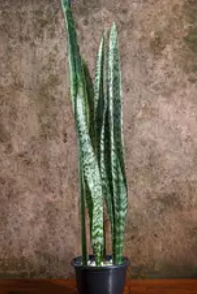
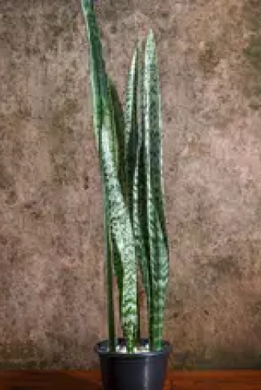

MIDDLEMIST
Home
Biotecnologia e Naturologia
Middlemist
Estilo
Nosso mural
Porque um futuro sem a nossa flora não é um vislumbre, mas sim um conto de fadas.
Seja bem-vindo
á Middlemist
á Middlemist
Ver Plantas
Jasmin
Amarilis
Lótus


Middlemist
A flor mais rara do planeta é a Middlemist Vermelha. Pertencente à
espécie Middlemist camélia, a planta possui tons de vermelho...
Existem tipos perenes ou caducifólios, bem como arbustos de caule
lenhoso. Escolha entre uma diversidade de flores,
A Amarílis é uma flor brasileira, super resistente ao clima tropical e
adaptável – ela pode ser cultivada no jardim de todos os cantos do...
A Amarílis é uma flor brasileira, super resistente ao clima tropical e
adaptável – ela pode ser cultivada no jardim de todos os cantos do...
8 visualizações
8 visualizações
8 visualizações
8 visualizações
0 comentários
0 comentários
0 comentários
0 comentários


 

TODOS OS POSTS
VAMOS CONVERSAR POR CHAT